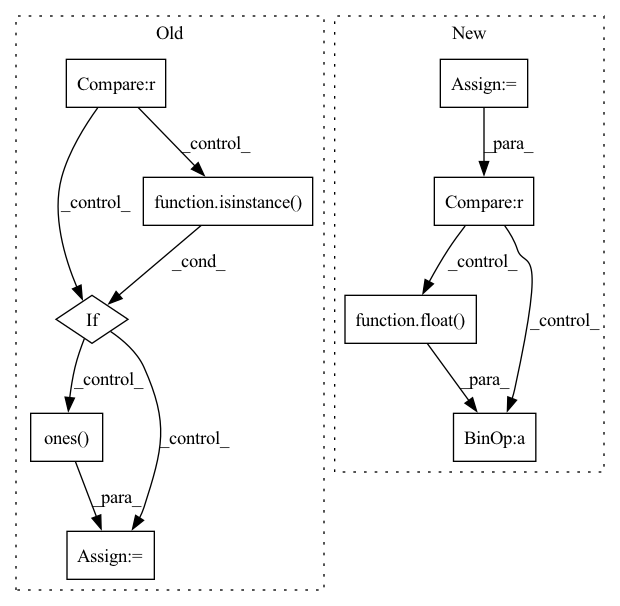

Pattern ID :23987
Before Change
return _input, None
if target_idx is None:
target_idx = self.target_idx
if loss_fn is None and self.loss_fn is None :
if target is None:
target = self.generate_target(_input, idx=target_idx)
elif isinstance( target, int) :
target = target * torch.ones( len(_input), dtype=torch.long, device=_input.device)
def _loss_fn(_X: torch.Tensor, **kwargs):
t = target
if len(_X) != len(target) and len(target) == 1:After Change
def attack(self):
// model._validate()
correct = 0
total = 0
total_iter = 0
for i, data in enumerate(self.dataset.loader["test"]):
if total >= 100 :
break
_input, _label = self.model.remove_misclassify(data)
if len(_label) == 0:
continue
adv_input, _iter = self.craft_example(_input)
total += 1
if _iter:
correct += 1
total_iter += _iter
print("{} / {}".format(correct, total))
print("current iter: ", _iter)
print("succ rate: ", float(correct) / total)
if correct > 0:
print("avg iter: ", float( total_iter) / correct)
print("-------------------------------------------------")
print()
In pattern: SUPERPATTERN
Frequency: 3
Non-data size: 9
Instances Fragment ID: 74553489
Project Name: ain-soph/trojanzoo
Commit Name: 5afae72db24844f2ecd29293bee298401d857ba4
Time: 2020-07-01
Author: ain-soph@live.com
File Name: trojanzoo/attack/adv/pgd.py
M Class Name: PGD
N Class Name: PGD
M Method Name: attack(1)
N Method Name: attack(5)
M Parent Class: PGD_Optimizer,Attack
N Parent Class: PGD_Optimizer,Attack
M File Name: trojanzoo/attack/adv/pgd.py
N File Name: trojanzoo/attack/adv/pgd.py
M Start Line: 28
M End Line: 47
N Start Line: 28
N End Line: 53
Before Change
:obj:`max_val + 1` of :attr:`index`. (default: :obj:`None`)
index = edge_index[dim]
if edge_weights is None :
if isinstance( edge_index, Tensor) :
edge_weights = torch.ones(edge_index.size(1), dtype=torch.int,
device=edge_index.device)
else:
edge_weights = np.ones( edge_index.shape[1], dtype=np.int)
degree = weighted_degree(index, edge_weights, num_nodes=num_nodes)
return edge_index, edge_weights / degree[index]
After Change
num_nodes (int, optional): The number of nodes, *i.e.*
:obj:`max_val + 1` of :attr:`index`. (default: :obj:`None`)
backend = infer_backend(edge_index)
if backend is torch_sparse :
assert edge_weights is None
deg = edge_index.sum(dim=dim).to(torch.float)
deg_inv = deg.pow(-1.0)
deg_inv[deg_inv == float( "inf") ] = 0
edge_index = deg_inv.view(-1, 1) * edge_index
return edge_index, None
index = edge_index[dim] Fragment ID: 74553475
Project Name: torchspatiotemporal/tsl
Commit Name: f28e5a2fddc34eeb90a13c113512c8ab12b6138b
Time: 2022-07-20
Author: ivan.marisca@hotmail.it
File Name: tsl/ops/connectivity.py
M Class Name: AnonimousClass
N Class Name: AnonimousClass
M Method Name: normalize(4)
N Method Name: normalize(4)
M Parent Class:
N Parent Class:
M File Name: tsl/ops/connectivity.py
N File Name: tsl/ops/connectivity.py
M Start Line: 181
M End Line: 187
N Start Line: 215
N End Line: 225
Before Change
:obj:`max_val + 1` of :attr:`index`. (default: :obj:`None`)
index = edge_index[dim]
if edge_weights is None :
if isinstance( edge_index, Tensor) :
edge_weights = torch.ones( edge_index.size(1), dtype=torch.int,
device=edge_index.device)
else:
edge_weights = np.ones(edge_index.shape[1], dtype=np.int)
degree = weighted_degree(index, edge_weights, num_nodes=num_nodes)
return edge_index, edge_weights / degree[index]After Change
num_nodes (int, optional): The number of nodes, *i.e.*
:obj:`max_val + 1` of :attr:`index`. (default: :obj:`None`)
backend = infer_backend(edge_index)
if backend is torch_sparse :
assert edge_weights is None
deg = edge_index.sum(dim=dim).to(torch.float)
deg_inv = deg.pow(-1.0)
deg_inv[deg_inv == float( "inf") ] = 0
edge_index = deg_inv.view(-1, 1) * edge_index
return edge_index, None
index = edge_index[dim] Fragment ID: 74553481
Project Name: torchspatiotemporal/tsl
Commit Name: 50089afdf23de12eb6d11e9d5e7e64d949d45611
Time: 2022-08-18
Author: ivan.marisca@hotmail.it
File Name: tsl/ops/connectivity.py
M Class Name: AnonimousClass
N Class Name: AnonimousClass
M Method Name: normalize(4)
N Method Name: normalize(4)
M Parent Class:
N Parent Class:
M File Name: tsl/ops/connectivity.py
N File Name: tsl/ops/connectivity.py
M Start Line: 181
M End Line: 187
N Start Line: 215
N End Line: 225